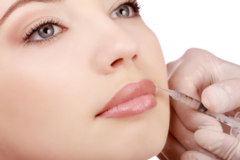
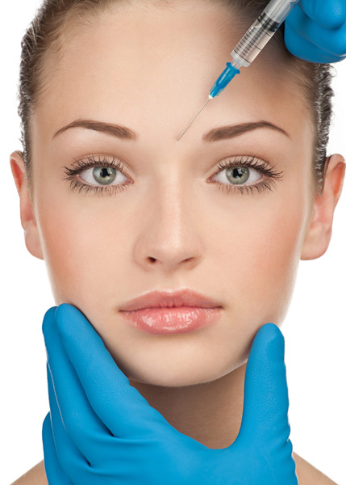

Albire dentara

Albirea dentara cu Beyond Polus Advance este cel mai modern sistem de albire, ce ofera rezultate exceptionale in doar 45 minute, realizand albirea cu pana la 8 nuante. Acest tratament previne sensibilitaea dentara protejand structura smaltului si tesuturile din jur.
Albirea dentară profesională reprezintă cea mai simplă și confortabilă metodă de a-ți recăpăta strălucirea zâmbetului într-o singură vizită în cabinetul medicului stomatologic.
Nu ne crede pe cuvant, vino la Clinica Healthy Dent si incearca.
Albirea dintilor cu acid hialuronic
Injectarea de acid hialuronic pentru marirea buzelor permite obtinerea unui aspect senzual. Aceasta procedura poate fi de ajutor si persoanelor cu defecte congenitale sau dobandite ale buzelor. Candidatii ideali pentru marirea buzelor sunt femei in buna stare de sanatate, care doresc o imbunatatire de volum si forma a buzelor. Tehnica se realizeaza in deplin confort sub anestezie locala.
Exista anumite situatii in care marirea buzelor este contraindicata: disfunctiile nervilor faciali, infectia herpetica recurenta, diabetul, istoricul de alergii multiple sau boli autoimmune.
Injectii cu Botox
Suportul natural al pielii este constituit din matrice proteica. Ridurile incep sa apara cand aceste proteine devin subtiri sau insuficiente si scade hidratarea si elasticitatea tesuturilor. Aceasta modificare a structurii si conformatiei pielii se datoreaza varstei, dar fumatul, expunerea prelungita la soare, poluarea, starea de sanatate precara, ereditatea si modul de viata sunt alti factori care o influenteaza in mod direct.
Cunoscute sub denumirea de riduri de expresie, ridurile faciale şi cervicale apar prin subţierea pielii la locurile de pliere si ca urmare a contracţiilor muşchilor cervico-faciali. Spre deosebire de ridurile fine, care apar ca urmare a procesului de îmbătrânire, ridurile de expresie pot apărea la vârste mai tinere.
Tratamentul cu toxina botulinică are ca scop reducerea contracţiei unor anumite grupe musculare faciale şi cervicale. Obiectivul tratamentului este de a obţine un facies luminos, armonios, simetric, cu mimica redusă absolut imperceptibil pentru cei din jur.
Indicaţiile tratamentului de rejuvenare cu toxina botulinică sunt:
- liniile frontale – orizontale;
- liniile glabelare – verticale, dintre sprancene;
- liniile nazo-labiale – dintre nas si cavitatea bucala;
- liniile peri-oculare – “laba gastei”;
- liniile “de marioneta” – cele care coboara de la coltul gurii;
- corectarea asimetriilor faciale (de exemplu, cele din paralizia facială);
- corectarea contracţiilor involuntare ale unor anumite grupe musculare (ticuri);
- liftingul chimic.
- cicatricile de la nivelul fetei.
- tratamentul „benzilor” cervicale;
- tratamentul hiperhidrozei (transpiraţia în exces);
Dintre contraindicaţiile tratamentului cu toxina botulinică:
- tiroidita autoimună
- miastenia gravis;
- alte afecţiuni autoimune;
Avantajul acestei proceduri consta in faptul că oferă o schimbare plăcută, fără a necesita timp de recuperare, oferind rezultate spectaculoase prin estomparea ridurilor, preventia adancirii ridurilor si confera un aspect intinerit si proaspat. Tratamentul de rejuvenare facială cu toxina botulinică reprezintă o metodă neinvazivă, rapidă şi eficientă de corectare a ridurilor feţei şi gâtului.
Toxina botulinică este un inhibitor al legăturii dintre fibrele nervoase motorii care comanda muşchii. Intervalul de timp este condiţionat de produsul folosit ( în medie 6 luni) şi în funcţie de numărul de injectări (la fiecare nouă injectare, perioada de acţiune creşte prin scăderea progresivă a diametrului unui muşchi aflat în repaus).
Tratamentul constă în injectarea unei soluţii cu ajutorul unor ace extrem de fine la nivelul zonelor de tratat. De exemplu, pentru ridurile verticale ale frunţii (dintre sprâncene) este nevoie în medie de 5 injectări, ridurile „labă de gâscă” necesită, în medie, 3 injectări etc. Injectările se pot face cu sau fără anestezie de suprafaţă, fiind foarte bine tolerat de majoritatea pacienţilor. Efectul toxinei botulinice începe să se instaleze după aproximativ 7 zile de la injectare. După aproximativ 6 luni efectul inhibitor al toxinei botulinice se diminuă treptat, musculatura reluându-şi funcţia anterioară injectării. S-a remarcat că, după o nouă injectare, perioada până la reluarea activităţii musculare creşte progresiv. Odată cu instalarea relaxării musculaturii mimicii, faciesul capătă un aspect luminos şi mult întinerit.
Printre efectele adverse se numără:
- înroşiri la locul de injectare – sunt pe o suprafaţă mică, cedează in cateva minute;
- dureri în momentul injectării – sunt minime, foarte bine tolerate de majoritatea pacientelor; la nevoie poate fi folosită cremă anestezică;
- mici vânătăi la locul de injectare – sunt rare, se resorb spontan în 7-10 zile;
- efect de „cădere” şi „senzaţie anormală” a feţei – este tranzitorie, durează câteva zile;
Pentru obţinerea unor rezultate estetice superioare se recomandă, în general, combinarea tratamentului cu toxina botulinică cu o tehnică de umplere a ridurilor şi una de rehidratare generală a feţei şi decolteului
Curiozități despre dinți care te vor face să îi privești altfel

- Dentiția temporară se formează înainte de naștere şi apare în jurul vârstei de 6 luni. Totuşi, 1 din 2.000 de copii se nasc cu dinţii erupţi.
- De ce apar cariile? Ne spune istoria. Copiii din era preistorică dezvoltau carii foarte rar, pentru că zahărul era inexistent în regimul lor.
- Cea mai puternică substanţă din corpul nostru este smalţul. Este chiar mai rezistent decât oasele.
- Dacă eşti dreptaci, vei tinde să mesteci mâncarea pe partea dreaptă. Stângacii vor mesteca mai mult pe partea stângă a cavităţii bucale. Cei ambidextri nu au preferinţe.
- Dacă folosim aţa dentară în fiecare zi, într-o viaţă întreagă consumăm peste 8 km de aţă dentară.